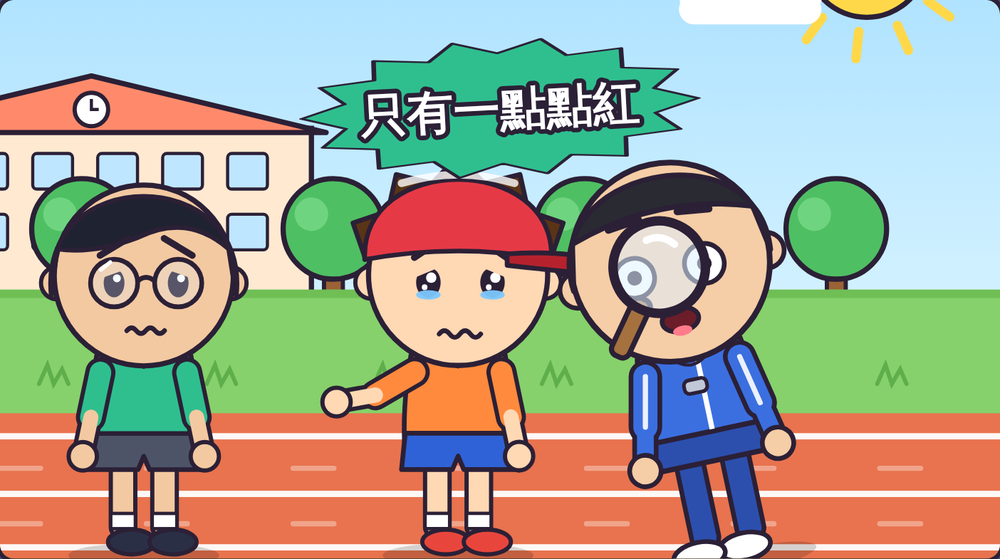
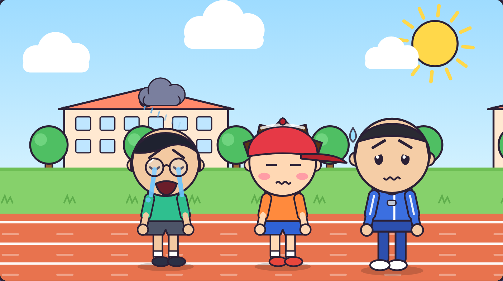
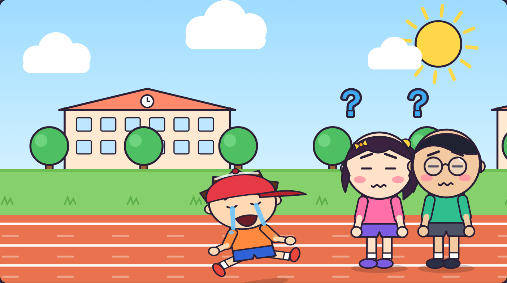
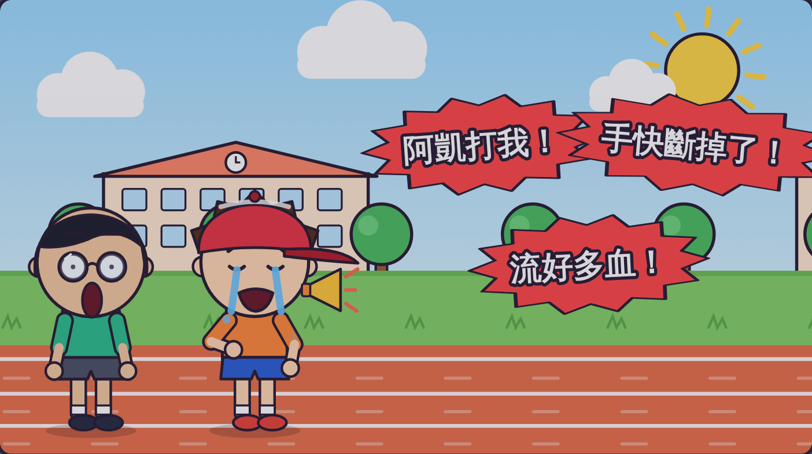
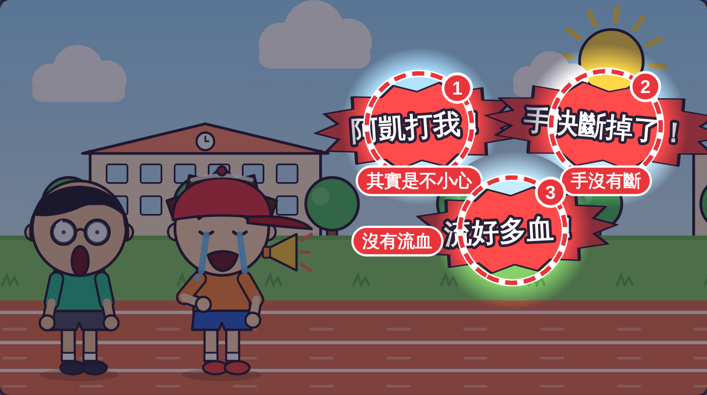
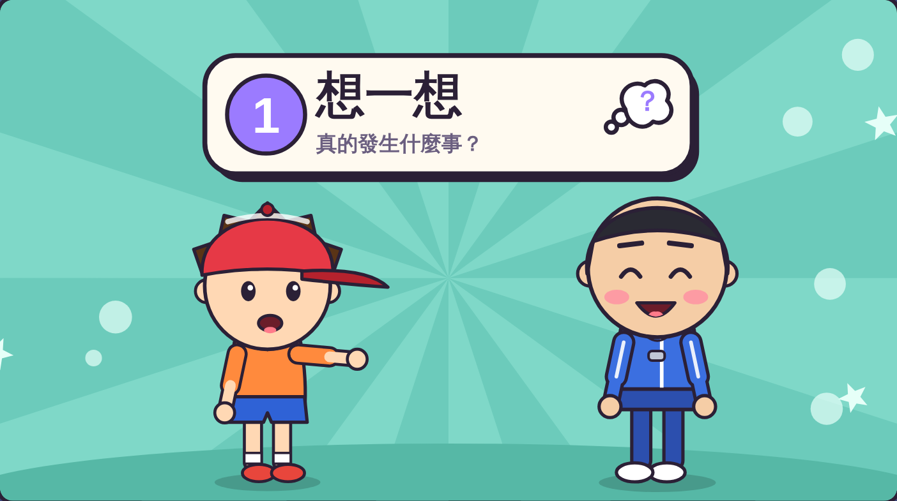
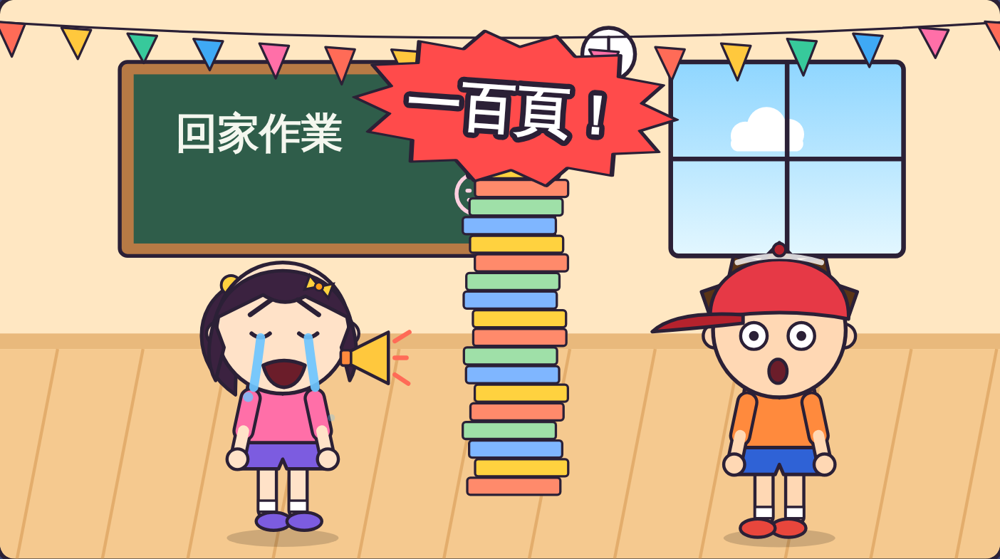

虎尾小劇場｜三年級資源班
1
真的需要幫忙時就麻煩了。
2
想一想、量一量、照實說。
虎尾小劇場｜照實說，大家才相信
想一想
你說了什麼？
真的那麼嚴重嗎？
別人怎麼想？
虎尾小劇場｜照實說，大家才相信
阿樂大喊：
「手快斷掉了！流好多血！」

老師看了：
沒有流血，只有一點點紅。
虎尾小劇場｜照實說，大家才相信

阿凱被誤會打人，
好難過。

阿樂真的受傷了，
大家卻不相信。
虎尾小劇場｜照實說，大家才相信

倒帶回去看
阿樂說的話
哪裡做得不好？
有 3 句話太誇張！
你找到幾個？
虎尾小劇場｜照實說，大家才相信

①「阿凱打我」
→ 其實是不小心
②「手快斷掉了」
→ 手沒有斷
③「流好多血」
→ 沒有流血
學學看怎麼照實說！
虎尾小劇場｜照實說，大家才相信
1
真的發生什麼事
2
有多嚴重
3
說剛剛好的話
第 1 步

剛剛真的
發生什麼事？
「阿凱跑步時，
不小心碰到我的手。」
換你想一想！
虎尾小劇場｜照實說，大家才相信
第 2 步
「我的手，只有一點點痛。」
量量看！
虎尾小劇場｜照實說，大家才相信
第 3 步
「老師，阿凱不小心
碰到我的手，
有一點點痛。」
說說看！
虎尾小劇場｜照實說，大家才相信
老師幫忙冰敷，
阿凱也說對不起。

小安說「一百頁」，
想一想，其實是兩頁。
虎尾小劇場｜照實說，大家才相信
老師抽一張誇張的話，請你改成照實說。
情境 1
情境 2
情境 3
虎尾小劇場｜照實說，大家才相信
一起念口訣
想一想，
量一量，
照實說，
大家才相信！
打開「照實說挑戰題」，
回答 9 個問題。
9 題
虎尾小劇場｜照實說，大家才相信